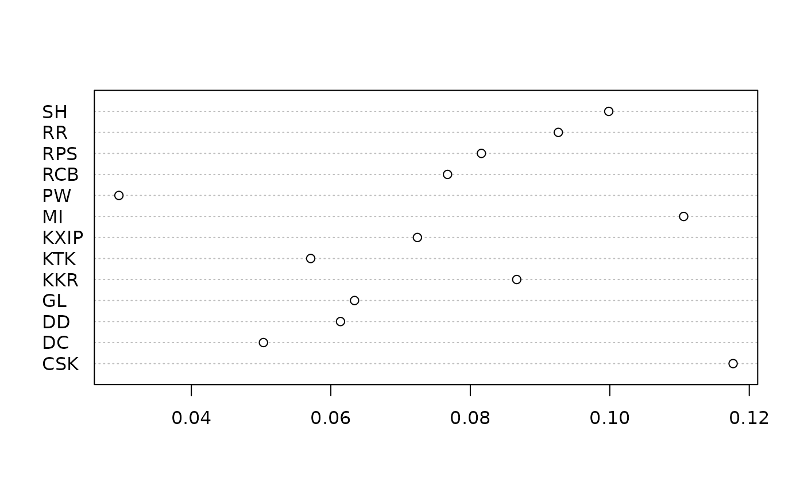

T20.RdCricket dataset, T20 Indian Premier League 2008-2017
data(T20)Dataframe T20_table has one row for each T20 IPL match in the
period 2008-2017 with the exception of seven drawn matches and three
no-result matches which were removed. Object T20 is a
likelihood function for the strengths of the 13 teams, and
T20_toss is a likelihood function that also includes a toss
strength term.
These objects can be generated by running script inst/T20.Rmd,
which is based on Chandel and Hankin 2019. This includes some further
discussion and technical documentation and creates file T20.rda
which resides in the data/ directory.
T. Chandel and R. K. S. Hankin 2019. “Analysing the impact of winning a coin toss in the Indian Premier League”. Auckland University of Technology.
summary(T20)
#> A hyper2 object of size 13.
#> pnames: CSK DC DD GL KKR KTK KXIP MI PW RCB RPS RR SH
#> Number of brackets: 79
#> Sum of powers: 0
#>
#> Table of bracket lengths:
#> 1 2
#> 13 66
#>
#> Table of powers:
#> -22 -21 -20 -19 -18 -17 -16 -15 -12 -11 -10 -9 -7 -6 -5 -4 -2 -1 6 12
#> 1 3 5 2 1 2 4 3 1 2 7 2 1 5 6 11 6 4 1 1
#> 13 15 29 42 62 63 70 73 77 79 92
#> 1 1 1 1 1 1 1 1 1 1 1
dotchart(T20_maxp)
